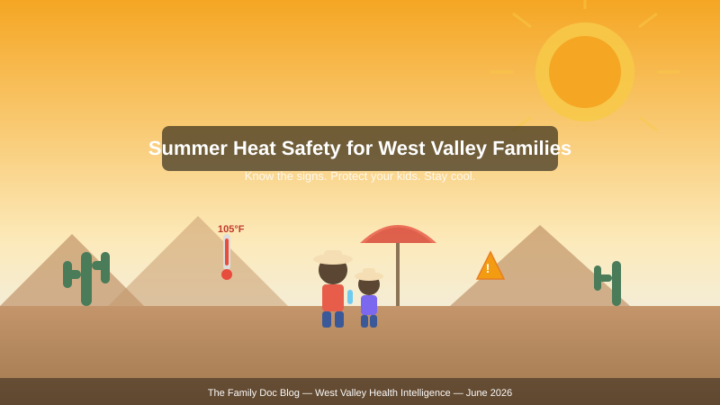

The West Valley — Surprise, Goodyear, Buckeye, Peoria, Glendale, Avondale — sits in one of the hottest metropolitan areas in the United States. Summer temperatures routinely exceed 110°F, and the concrete and asphalt of suburban sprawl create urban heat islands that push it even higher. For families with young children, aging parents, or anyone working outdoors, heat is not an inconvenience. It is a medical emergency waiting to happen.

Why children are at higher risk
Kids are not just small adults when it comes to heat. Children produce more metabolic heat per pound of body weight, sweat less efficiently, and have a higher surface-area-to-volume ratio — meaning they absorb heat from the environment faster than they can shed it. A child's core temperature can rise 3–5 times faster than an adult's in the same conditions [¹]. They also depend entirely on adults to recognize when they are getting into trouble, because early heat illness often looks like irritability, fatigue, or just "acting cranky" — symptoms that are easy to miss on a hot day at the park.
Children under 4 and teens doing sports in the heat are the highest-risk groups. Youth football practice, soccer tournaments, and summer league baseball in the West Valley routinely occur when the heat index exceeds 105°F. The Arizona Interscholastic Association has heat acclimatization guidelines, but not all club or recreational leagues follow them.
The heat illness spectrum: from cramps to crisis
Heat illness is a spectrum. Understanding the progression helps you act before it becomes an emergency.
Heat cramps — the earliest warning sign. Painful muscle spasms, usually in the legs or abdomen, during or after exertion in the heat. The body is losing salt and water faster than it is being replaced. Action: Stop activity, move to shade or AC, drink water with electrolytes (or a sports drink), and gently stretch the muscle. If cramps persist beyond 1 hour, seek medical care.
Heat exhaustion — the body is losing the battle. Symptoms include heavy sweating, weakness, nausea, dizziness, headache, cool/clammy skin, and a fast/weak pulse. Body temperature may be elevated but is typically below 104°F. This is the last stop before heat stroke. Action: Move to air conditioning immediately. Remove excess clothing. Apply cool water or compresses to the neck, armpits, and groin. Sip cool water. If symptoms worsen or do not improve within 30 minutes, call 911.
Heat stroke — a life-threatening emergency. Body temperature exceeds 104°F. Skin becomes hot, red, and dry (though it may still be moist in exertional heat stroke). Confusion, slurred speech, loss of consciousness, and seizures may occur. Action: Call 911 immediately. Move the person to shade. Cool aggressively — ice water immersion is the gold standard if available, otherwise apply ice packs to the neck, armpits, and groin while misting with water and fanning. Do not give fluids if the person is altered or unconscious.
West Valley ER note: Banner Health, Abrazo, and Dignity Health emergency departments across the West Valley see a predictable surge in heat-related visits from June through September. Do not wait to go if you suspect heat stroke. Minutes matter.
Hydration: more than just water
In 20% humidity — typical for Phoenix in June — sweat evaporates so fast you may not realize how much fluid you are losing. A child playing outdoors in 105°F heat can lose 1–2 liters of fluid per hour. An adult doing yard work can lose even more.
Plain water is good, but in heavy sweating situations, electrolytes matter. Sodium, potassium, and magnesium are lost in sweat. For most families, a balanced snack with water (fruit + a handful of pretzels or nuts) covers mild losses. For prolonged outdoor activity (sports practice, hiking, landscaping), an electrolyte drink is appropriate — but choose carefully. Many commercial sports drinks are high in sugar. Look for options with <200 mg sodium per serving and moderate sugar, or make your own: 1 liter water + ¼ tsp salt + 2 tbsp honey + a squeeze of lemon.
Hydration targets for hot days:
- Children (4–8): 5 cups (40 oz) baseline + 8 oz per 20 min of outdoor activity
- Children (9–13): 7–8 cups (56–64 oz) baseline + 8–12 oz per 20 min of activity
- Teens and adults: 8–12 cups baseline + 16–24 oz per 30 min of exertion in heat
- Older adults (65+): At least 8 cups daily; thirst perception blinks with age, so schedule fluid intake rather than waiting for thirst
The car: a lethal trap in minutes
This is the statistic that should stop every parent: when it is 100°F outside, the temperature inside a parked car reaches 119°F in 10 minutes and 129°F in 20 minutes — even with the windows cracked [²]. A child's body temperature can reach lethal levels (107°F+) in under an hour in these conditions. Since 1998, an average of 38 children per year have died from vehicular heat stroke in the United States. Arizona consistently ranks among the top states.
Non-negotiable rules:
- Never leave a child, pet, or vulnerable adult in a parked car — not for "just a minute."
- Lock your car at home so children cannot climb in unnoticed.
- Place your phone, shoe, or bag in the back seat as a visual check before locking up.
- If you see a child alone in a hot car, call 911 immediately.
Outdoor activity timing and the AQI factor
Today's AQI is 2 (fair) — a good day by Phoenix standards. But summer ozone levels in the West Valley frequently push AQI into the 100–150 range (unhealthy for sensitive groups). Ground-level ozone is worst between noon and early afternoon on hot, sunny days. For kids with asthma, COPD, or other respiratory conditions, high ozone days add another layer of risk on top of the heat.
Rule of thumb for outdoor activity:
- Schedule sports, play, and outdoor work for before 10 AM or after 6 PM whenever possible.
- Check the AQI at AirNow.gov before planning outdoor time. AQI above 100 = limit intense outdoor activity for sensitive groups.
- On AQI days above 150, keep everyone — especially children and seniors — indoors in air conditioning.
- Shade helps with heat but does nothing for ozone. If the AQI is high, only indoor air filtration provides protection.
Seniors and the heat: a quiet epidemic
Older adults are the other high-risk population that often flies under the radar. Aging reduces the body's ability to sense thirst, regulate temperature, and sweat effectively. Many common medications — diuretics, beta-blockers, anticholinergics, antipsychotics — further impair heat response. Social isolation compounds the risk: an elderly neighbor living alone with no AC is in real danger during a Phoenix heat wave.
The Maricopa County Heat Relief Network operates cooling centers and water distribution sites across the region from May through September. The City of Surprise, City of Peoria, and City of Goodyear all participate. If you have an elderly neighbor or relative, check on them daily when temperatures exceed 105°F. A 2-minute phone call or knock on the door can save a life.
Heat Relief Network: Call 2-1-1 or visit maricopa.gov/1939 for cooling center locations and hours across the West Valley.
Sunburn and skin protection: the long game
Heat safety and sun safety are related but distinct. A bad sunburn impairs the skin's ability to cool itself for days, compounding heat illness risk. In the West Valley, UV index regularly hits 11+ (extreme) from May through August. At that level, unprotected skin burns in under 10 minutes.
- Use broad-spectrum SPF 30+ on all exposed skin, applied 15 minutes before going outside and reapplied every 2 hours (or after swimming/sweating).
- Wide-brimmed hats and UV-blocking sunglasses for everyone — especially kids.
- Lightweight, long-sleeved UPF clothing is more reliable than sunscreen alone for extended outdoor time.
- Infants under 6 months should be kept out of direct sunlight entirely.
Building your family's heat action plan
Do not wait for the first 110°F day to figure this out. Sit down with your family now and make a plan:
- Know your cooling centers. Identify the nearest air-conditioned public space — library, mall, community center — in case your AC fails.
- Stock your heat kit. Electrolyte packets, a spray bottle for misting, cooling towels, a battery-powered fan, and a thermometer for checking your car's interior temperature.
- Set activity rules. No outdoor sports between 11 AM and 5 PM when the forecast exceeds 105°F. Full stop.
- Check on vulnerable people. Make a list of elderly neighbors, relatives, and anyone without reliable AC. Check on them daily during heat waves.
- Know the ER route. Know which emergency department is closest and fastest from your home, your child's school, and your workplace.
References
- Falk B, Dotan R. Children's thermoregulation during exercise in the heat — a revisit. Appl Physiol Nutr Metab. 2008;33(2):420-427.
- McLaren C, Null J, Quinn J. Heat stress from enclosed vehicles: moderate ambient temperatures cause significant temperature rise in enclosed vehicles. Pediatrics. 2005;116(1):e109-e112.
- CDC. Heat and health tracker. Centers for Disease Control and Prevention. https://ephtracking.cdc.gov/Applications/heatTracker/. Accessed June 2026.
- Maricopa County Department of Public Health. Heat-associated deaths in Maricopa County. Annual surveillance report, 2024.
- Arizona Department of Health Services. Extreme heat preparedness. azdhs.gov. Accessed June 2026.
- American Academy of Pediatrics. Climatic heat stress and the exercising child and adolescent. Pediatrics. 2000;106(1):158-159.
- National Weather Service. Heat safety tips. weather.gov/safety/heat. Accessed June 2026.